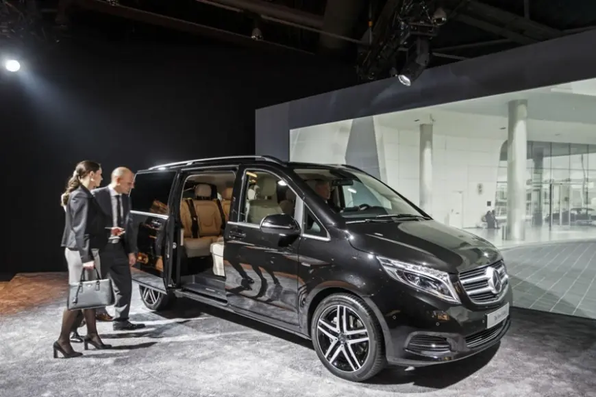
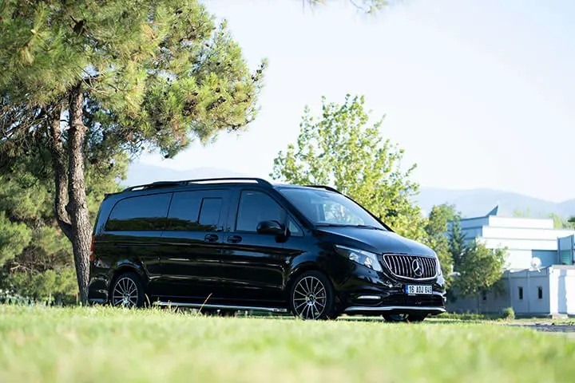
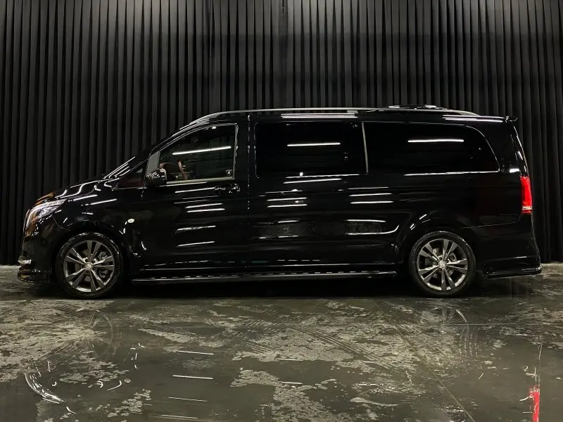

Ankara Şoförlü Vito Kiralama Fiyatları ve Avantajları
Kalabalık aileler ve iş ekipleri için en popüler tercih olan Mercedes Vito VIP araç kiralama seçeneklerini inceledik.
Devamını OkuSeyahat ipuçları, Ankara rehberi ve VIP taşımacılık dünyasından haberler.

Araç KiralamaKalabalık aileler ve iş ekipleri için en popüler tercih olan Mercedes Vito VIP araç kiralama seçeneklerini inceledik.
Devamını OkuSabit fiyat garantisiyle sürprizlere yer yok. Çankaya, Batıkent, Keçiören ve diğer ilçelere güncel transfer maliyetleri.
Devamını Oku
RehberValizlerle durak aramak mı, kapıdan alınmak mı? Toplu taşıma ile özel transfer arasındaki 5 kritik fark.
Devamını Oku
HizmetlerToplantıdan toplantıya koşarken park yeri aramayın. Şoförünüz sizi kapıda beklesin, zamanınız size kalsın.
Devamını OkuKlasik araba stresini unutun. Geniş, klimalı ve konforlu VIP araçlarımızla en mutlu gününüze rahat bir başlangıç yapın.
Devamını OkuHızlı trenle gelen misafirlerinizi gar çıkışında isme özel karşılıyor, otellerine veya evlerine güvenle bırakıyoruz.
Devamını Oku